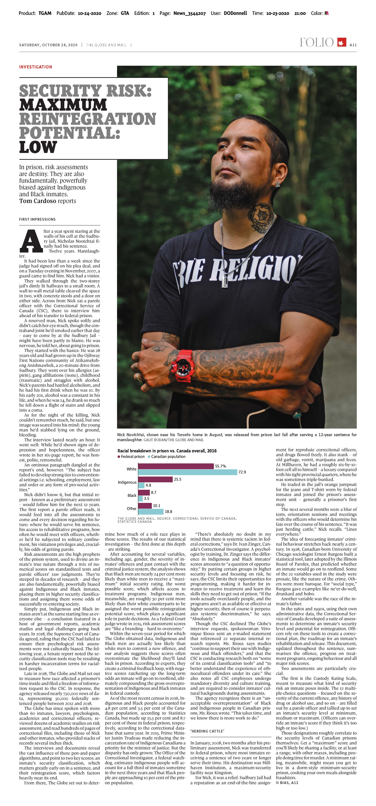
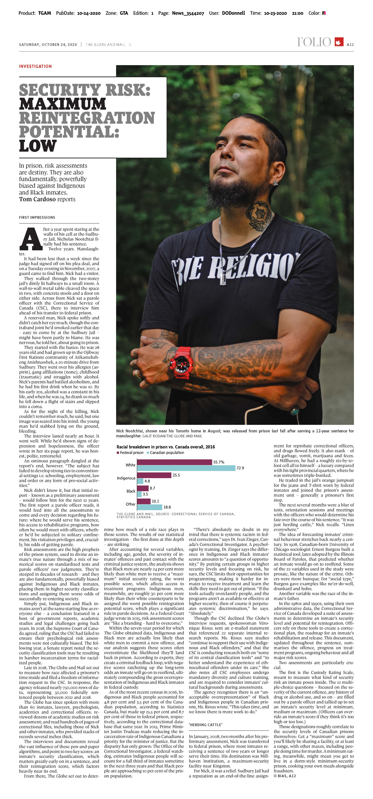

Investigating systemic racial bias in federal prisons
bit.ly/2Yrdn10
You can also find the GitHub repository for this presentation at:
About me

Tom Cardoso, crime and justice reporter
at The Globe and Mail
 


A sentence of two years or longer lands you in federal prison. We have a massive overincarceration problem for Indigenous and Black people.
Risk assessments
- Standardized tests.
- Designed to measure an inmate’s risk to the public and odds of being rehabilitated.
- Everywhere in corrections. Murderers, fraudsters, etc.: everyone gets one.
- Federally, used to classify, treat, and parole the 12-14,000 inmates in custody each year.
- But: Evaluating risk is tricky. Tons of room for bias.
Though there are many risk tools and types of scores in federal prison, two are most important: security classification and reintegration potential score.

Custody Rating Scale
Static Factors

Dynamic Factors
Issues in assessment
- Cultural bias
- Highly subjective to the assessor
- Tough to interpret results
- Take years to design an assessment, and then years to find out if it works
- Over time, tools become less effective
What we found
After controlling for variables like age, gender, the severity of inmates’ offences and past contact with the criminal justice system…
Black men are roughly 24% more likely than white men to end up in maximum security at admission.
Indigenous men are roughly 30% more likely to have the worst reintegration score at any point.
Both are less likely to reoffend after controlling for reintegration scores.
Even worse for Indigenous women
They’re roughly 64% more likely than white women to end up in maximum security at admission.
Also roughly 40% more likely to receive the worst reintegration score.
And, as an internal report we later obtained made clear: the government had warned Correctional Service Canada in 2004 about bias in its risk scores.
How did this come together?
- More than 90 interviews with sources developed over a nine-month period
- Hundreds of pages of inmate records, dozens of academic studies
- One big freedom of information request, for a massive CSC database of 50,000 inmates. 750,000 rows in all. (If you'd like to learn about filing “data FOIs,” check out my other talk.)
What about the analysis process?
- Started simple, summarizing the data.
- Quickly realized that if I wanted to quantify the impact of race alone, I needed to somehow account for variations in age, gender, offence severity, etc.
- Enter: statistical modelling! Multivariate logistic regressions, specifically.
- All done using R, a statistical programming language, and The Globe’s data journalism template, startr. (And a lot of help from statisticians and academics.)
Response
- Published first story on a Saturday morning. By Monday afternoon, the House of Commons public safety committee had announced a study of systemic racism in prison risk assessments.
- Prime Minister acknowledged findings a few days later.
- Lawyers using our reporting at parole hearings.
- Just two weeks ago: Class-action human rights lawsuit filed against the federal government on behalf of tens of thousands of inmates.
Takeaways
- File big-picture, ambitious data FOIs. Most won’t work out… but a few will.
- Don’t be afraid to pivot. I did!
- Experiment with new techniques whenever you can. I learned how to model data for this story.
- Try to disprove your own findings. Especially on big stories.
- Write a methodology story. Be transparent about your process and caveats. Most people won’t read it, but the ones who do will appreciate it.
- Data is just one tool. Never underestimate the importance of traditional reporting. You still need to find documents, build sources and pick up the phone.
Stories
- Bias behind bars: A Globe investigation finds a prison system stacked against Black and Indigenous inmates (Oct. 24)
- How we did it: How The Globe uncovered systemic bias in prisoners’ risk assessments (Oct. 24)
- A shot in the dark and 185 megabytes of data: How I investigated a system of bias in Canada’s prison system (Oct. 24)
- ‘This needs action’: NDP, experts call for solutions to racial bias in federal prison risk assessments (Oct. 26)
- Fight against systemic racism in prison wins all-party support (Oct. 26)
- More needs to be done to fight systemic racism in federal prisons, Justin Trudeau says (Oct. 27)
- MPs ask Bill Blair for timeline to address systemic racism in prisons (Nov. 2)
- For Indigenous women, systemic racial bias in prison leaves many worse off than men (Dec. 31)
- Inmate risk assessment tool still in use 16 years after report raises concerns about bias against women (Jan. 3)
- Proposed class-action suit against Ottawa suggests inmates face systemic bias in risk assessments (Jan. 12)